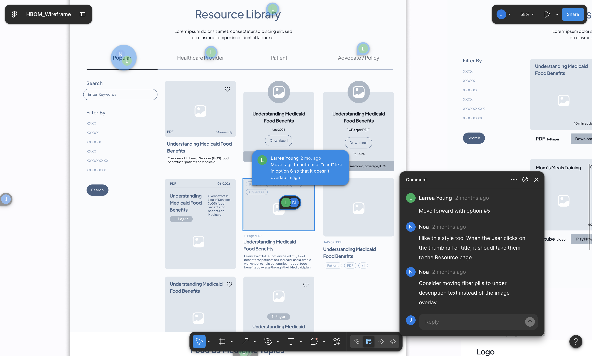

The Problem
nutrivp.org told visitors that FAM and ILOS benefits existed, then gave them nowhere to go: no library, no filter, no way back in.
The Solution
A searchable hub where a provider, a patient, and an advocate each filter down to exactly what applies to them, without wading through content built for someone else.
01
Problem
FAM and ILOS benefits are real but fragmented: coverage varies by Medicaid plan and region, and existing resources are scattered across providers, PDFs, and one-off pages.
nutrivp.org was a public landing page with no library behind it.
Patients
“What does my plan actually cover? There is no way to find out.”
Providers
“No shared place to send patients to learn more.”
02
Research
I reviewed existing FAM and health resource sites to understand what works and what's missing.

What was missing
No user-type segmentation · unclear click behavior · no way to ask for a missing resource.
03
Design decisions
I explored multiple directions and weighed the tradeoffs before building.
Filter placement

Resource detail layout

Card exploration

04
Features

Non-gating filters
User-type entry + Topic/Media filters. "All" by default — non-gating, so overlapping users never have to self-label.

One form, two purposes
One dual-purpose form (request or suggest); captures user type for future segmentation.

Built-in trust signals
Org logo/banner, estimated read time, last-updated date, and open-in-new-tab.
05
Impact & Takeaways
Built and handed off to HBOM; public launch is pending, so these are learnings, not usage numbers.
A logo, a source, an estimated read time, small cues that make an unfamiliar medical resource feel safe to click.
The forgiving, non-gating filters were the direct payoff of realizing "who are you" doesn't have one clean answer.
Also edited a 30-second patient reel, which deepened my grasp of the field and the organization.